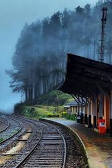

Idalgashinna is a small village in the Badulla District, Uva Province, Sri Lanka. Situated at an elevation of about 1,615 metres above sea level, it is located in the Haputale–Namunukula mountain range.
Idalgashinna is a small village in the Badulla District, Uva Province, Sri Lanka. Situated at an elevation of about 1,615 metres above sea level, it is located in the Haputale–Namunukula mountain range.
The nearest airport to Idalgashinna is Hatton (NUF). However, there are better options for getting to Idalgashinna. Sri Lanka Railways operates a train from Gampaha to Idalgashinna 3 times a day.
